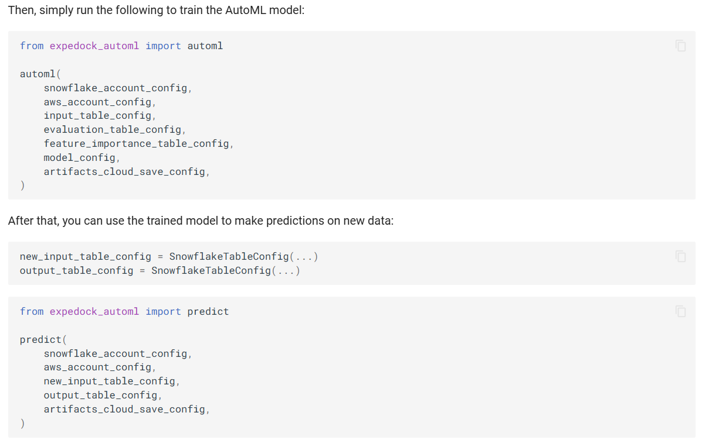

Mailing address
Professor Dr von Igelfeld
Institute of Romance Philology
University of Regensburg
Regensburg, Germany
Office address
Room 133
Institute of Romance Philology
University of Regensburg
Office location
||||||| parent of c2a5aa9... squash all commits:public/location/index.htmlMailing address
Department of Subject University of Place Street City, State, Zip
Office address
Room Number
Building Name
University of Place
Office location
=======
An internal AutoML library at Expedock that fits a model, runs batch inference, and gets explanations in one line of code each. The library is built on top of scikit-learn, shap, and auto-gluon. The library is designed to be used by non-technical users who want to quickly fit a model and get interpretability results without having to worry about the technical details.